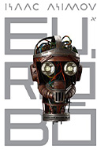

Passe o mouse para mais informações
- 
SAP
SAP é uma empresa alemã líder global em software de gestão empresarial, conhecida principalmente por seu software de planejamento de recursos empresariais (ERP) chamado SAP ERP. Além do ERP, a SAP oferece uma ampla gama de soluções de software empresarial para várias áreas, incluindo finanças, recursos humanos, gestão de cadeia de suprimentos, vendas, marketing, análise de dados e muito mais.